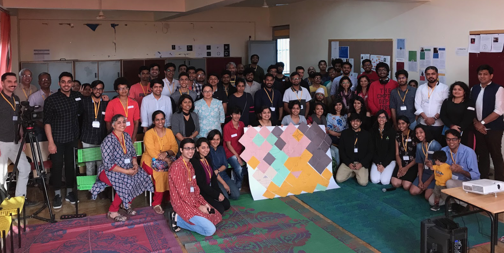
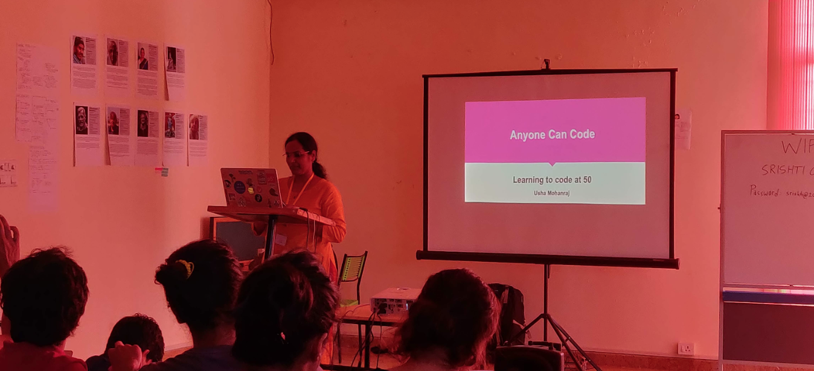
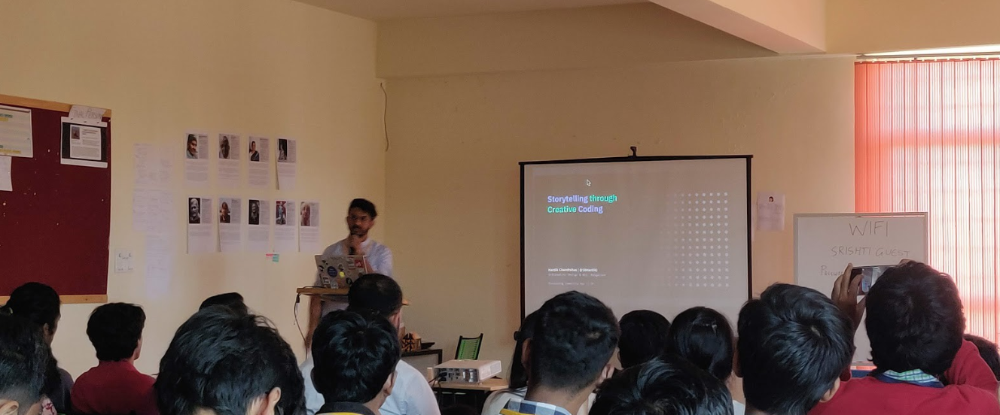
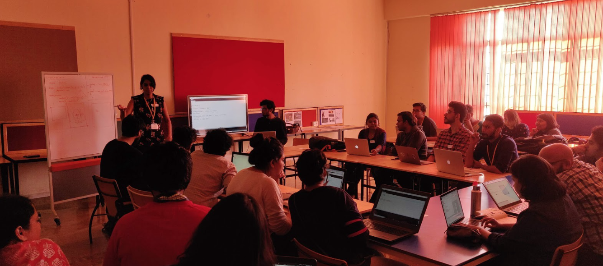

Processing Community Day (PCD) is a day to celebrate and explore art, code, and diversity around the world. What does that mean? - aside from the conventional lecture / demo format, our PCD can be a show & tell session, a zine-making session, an audio-visual performance, a DIY art show, a game jam, a group discussion on software art or ALL OF THE ABOVE.
A focus of this project is to make learning how to program and make creative work with code accessible to diverse communities. Here's a snapshot of PCD India from last year
A group picture of the participants of PCD Bangalore — group of people in the center are holding the “Data Selfie” installation
Usha Mohanraj presenting her talk “Anyone Can Code: Learning to code at 50”
Hardik Chandrahas presenting his talk “Storytelling through creative coding”
Participants in the “ Generative Futures” workshop working on their laptops
Check out the list of PCD in India in 2020
For any questions, email bangalore@processingindia.org
To learn more about Processing Day, check out the global PCD website global PCD website